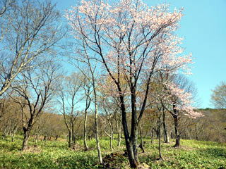
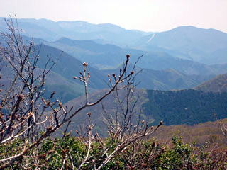
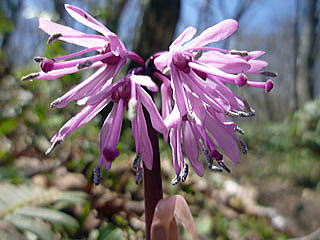
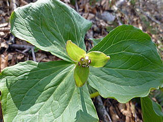
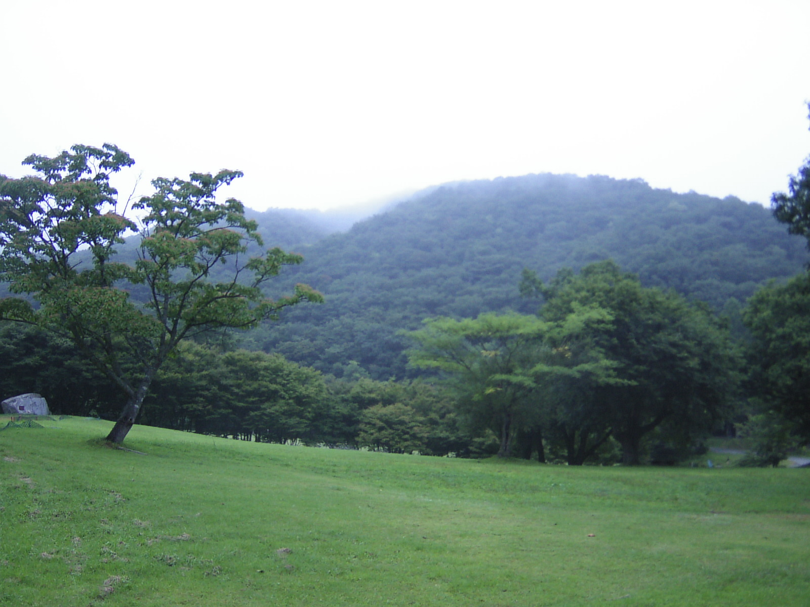
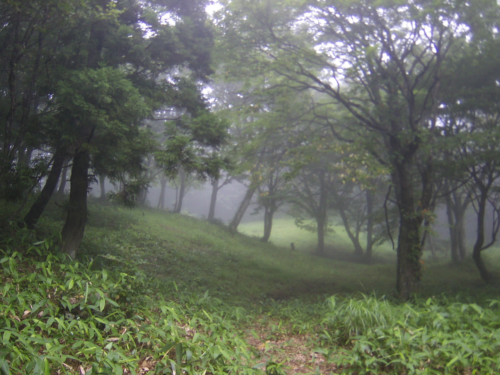
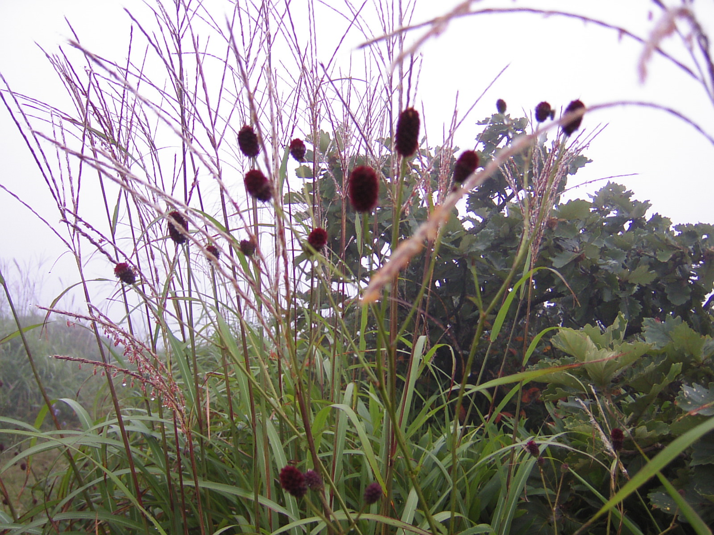
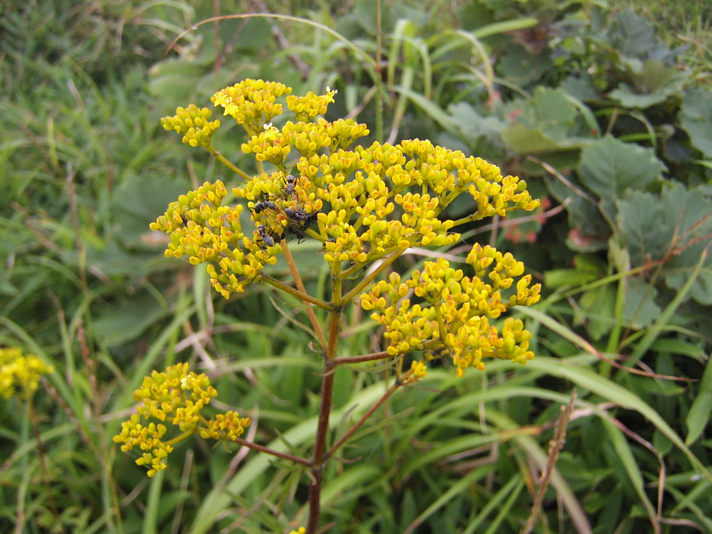
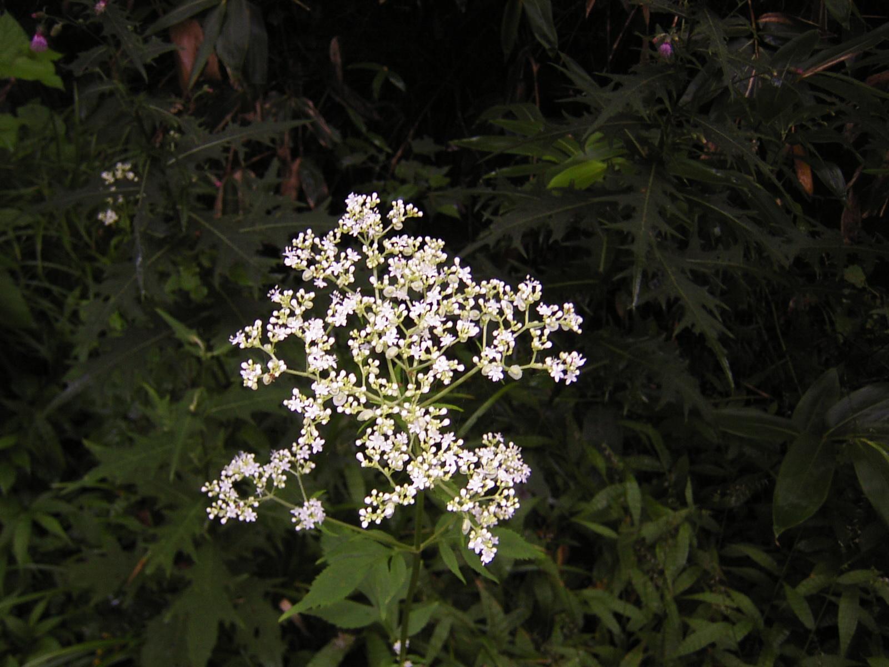

県民の森
ゴールデンウィーク最後に県民の森へ
出雲峠〜烏帽子山〜御陵〜立烏帽子駐車場まで歩き
管理センターへ下り、１０キロ余り 4時間程 久しぶりに良く
歩きました。お風呂に入りさっぱり気持ちよく帰路へ
| ２０１３．５・５（日） | 出雲峠から立烏帽子駐車場まで歩き引き返す |
| １０：００ | 管理センター出発 |
| １１：３０ | 毛無山頂上 |
| １２：２０ | 比婆山御陵 |
| １１：３０ | 出雲峠 |
| １３：２０ | 立烏帽子駐車場 |
| １４：３０ | 管理センター着 |
 |
| 出雲峠の山桜は、まだまだ きれいでした |
|  |
| 烏帽子山頂上から道後山・猫山方面を見る |
|  |
| しょうじょうばかま |
|  |
| えんれいそう |
山あるきウォーミングアップ まずまずの感触に気を良くして県民の森第二弾
夏に歩くには、木立の中を歩くのが多いのと、目的に合わせてコースを選べるし
素敵な山と、改めて実感しました。昼から雷雨になりましたが、ブナ林の中なので、
比較的 安全を信じながら山を降りました。
| ２０１２．８．１８（土） | 毛無山から烏帽子山頂上へ |
| ９：００ | 管理センター出発 |
| １０：２０ | 毛無山頂上 |
| １１：００ | キキョウが丘 |
| １１：３０ | 出雲峠 |
| １２：００ | 烏帽子山頂上 |
| １４：３０ | 管理センター着 |
ひさしぶりに県民の森へ出かけました。体力低下を心配しながらの山あるき
比較的 高低差の少ない なだらかなコースを３時間程歩きました
朝は雨もようでしたが、山を歩く間は雨にも降られずラッキーでした。
管理センターのお風呂から上がると雨が降っていました。
| ２０１２．８．１４（火） | 毛立烏帽子駐車場から池の段おっ原越えをして |
| 管理センターへ | |
| １０：３０ | 管理センター出発 |
| １２：００ | 立烏帽子駐車場 |
| １２：２０ | 池の段 |
| １４：３０ | 管理センター着 |
県民の森 一周しようと朝早くから出掛け 頑張りました
| ２００９．１０ ２５（日） | 比婆山一周 頑張りました！ |
| ８：４０ | 管理センター出発 |
| ９：１０ | 見晴台 |
| １０：２０ | 立烏帽子駐車場 |
| １０：３０ | 立烏帽子頂上 |
| １０：４５ | 池の段 |
| １１：４０ | 比婆山御陵 |
| １３：００ | 烏帽子山頂上 |
| １４：００ | 毛無山頂上 |
| １４：４０ | 伊良谷山頂上 |
| １５：３０ | 管理センター着 |
| ２００９．８．３０（日） | 毛無山〜出雲峠） |
| ７：００ | 衆議院選挙の投票を済ませ出発 |
| １０：００ | 県民の森 管理棟出発 |
| １１：００ | 毛無山頂上 |
| １２：００ | 出雲峠 昼食 小雨模様 |
| １２：２０ | 烏帽子頂上を諦め下山 |
| １３：００ | 管理棟着 |
|  | |
|  | |
|  | |
|  | |
|  |